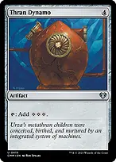
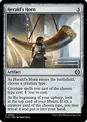
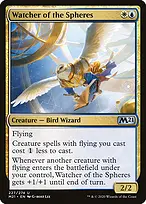
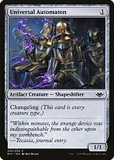
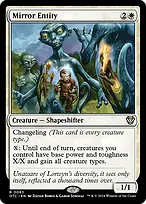
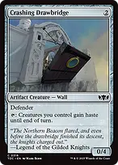
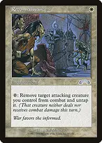

Eminence discounts OTHER Sphinx spells while The Ur-Sphinx is in the command zone or on the battlefield; it does not discount the commander itself. The mill-and-cast attack ability works only while the commander is on the battlefield. Develop discounted Sphinxes and card engines first, then deploy the commander when existing attackers can immediately turn it into free spells.
The refined list uses faster mana, precise reanimation, and cheap tribal enablers to make the attack plan more reliable. Its three Game Changers remain Consecrated Sphinx, Smothering Tithe, and Cyclonic Rift. This is a B-tier tribal attack and reanimation deck: it functions without resolving the nine-mana commander, but has no compact combo finish and still needs a board to win. Strong interactions do not eliminate that structural limit.
Develop without waiting for nine mana
For each resolving attack trigger, each player mills cards equal to the number of Sphinxes that attacked. You may cast up to one card milled this way from EACH player, including yourself, without paying its mana cost. In a four-player game that is up to four spells per trigger. More Sphinxes improve the choice of cards, rather than increasing the one-card-per-player allowance.
Cast those spells during the trigger's resolution; you cannot save the permission for later. Normal timing based on card type is ignored, but other restrictions and mandatory additional costs still apply. Lands cannot be cast, and an X in a free spell's mana cost is zero. New creatures from those spells do not join a combat whose attackers were already declared.
 +
+
Sol Ring + Thran DynamoAccelerates the generic costs of your large creatures and artifacts. Arcane Signet, Fellwar Stone, and the three Talismans provide early color fixing; protect access to blue and do not mistake colorless acceleration for the white-blue-black needed to cast Raffine. Thran Dynamo: Four mana produces an immediate three-generic refund and three mana each later turn. This replaces a much slower untap payoff with actual acceleration toward the commander or two Sphinxes in one turn. Preserve enough colored sources; Dynamo cannot supply white, blue, or black.
 +
+
Urza's Incubator + Herald's HornChoose Sphinx. It reduces Sphinx creature spells by two generic mana, including the commander. With Eminence, most other Sphinxes receive a combined three-mana generic discount. Herald's Horn: Another generic discount and a possible Sphinx card at each upkeep. The card goes to hand rather than being drawn. It is less explosive than Incubator but stays useful across a long game.
 +
+
Sapphire Medallion + Watcher of the SpheresReduces generic costs of blue spells, including your commander, most Sphinxes, and several protective spells. It cannot reduce a colored mana requirement. Watcher of the Spheres: Reduces the generic cost of flying creature spells, including The Ur-Sphinx. It is not a Sphinx, so Eminence does not discount Watcher; Mirror Entity also normally lacks flying and gets no Watcher discount.
Make every Sphinx repay its cost
 +
+
Consecrated Sphinx + Loran of the Third PathThe second Game Changer gives optional draws whenever opponents draw. Resolve and track each trigger rather than drawing automatically; with Roaming Throne, each opposing draw can offer four cards. Loran of the Third Path: Removes an artifact or enchantment for three mana without waiting for multiple tribal discounts. Its later draw activation gives both you and a chosen opponent a card, which can also trigger Consecrated Sphinx and Smothering Tithe. Do not gift an opponent a card if that could hand them the interaction or win they need.

Universal Automaton
Eminence reduces this changeling's one-generic cost to zero. It is a Sphinx in every zone, so it triggers Unesh and Kindred Discovery on entry and counts for tribal attacks and Bloodline Bidding. It is excellent cheap fodder for Diabolic Intent or Victimize. A free 1/1 is not worth spending a card on without a relevant engine, sacrifice use, or attack plan.

Roaming Throne
Choose Sphinx as it enters. It becomes a Sphinx on the battlefield and doubles triggered abilities of your OTHER Sphinx creatures: Unesh, Tivit, Consecrated Sphinx, and the commander's attack ability are premium choices. It is a Golem spell on the stack, so Eminence does not discount casting it.
 +
+
Mystic Remora + Esper SentinelEarly card access and a tax on opposing noncreature spells while you develop mana. Let it go when cumulative upkeep would prevent a necessary engine or protection play. Esper Sentinel: Early noncreature-spell draw pressure. Counters from Denzilore can increase its tax later, but it does not become a Sphinx unless Mirror Entity changes its types.
Turn selection into a lethal board

Entomb
One black mana puts the specific creature you want into the graveyard for Reanimate, Animate Dead, Necromancy, or tribal recovery. Unesh develops a lasting engine; Magister Sphinx sets up a kill; Consecrated Sphinx supplies cards. This costs a card without giving a creature immediately, so plan the reanimation and protect against graveyard exile.
When Raffine, Kindred Discovery, and The Ur-Sphinx all trigger from an attack, choose the order deliberately. Drawing the top card before milling can remove the card you meant to cast for free; discarding through Raffine can trigger Curator of Mysteries and let you scry before the commander's mill. Targets for triggered abilities are chosen when those abilities are put on the stack.
Reuse what you discard and mill

ReanimateReturns a creature from any graveyard for one black mana, at a life cost equal to its mana value. It can recover your expensive Sphinx or steal an opponent's creature that was milled. Reanimating The Ur-Sphinx costs nine life and only works if the commander is actually in the graveyard.

Takenuma, Abandoned MireAn untapped black land early, or late recovery of a creature to hand after milling three. Returning Uldaros to hand preserves the chance to cast it for its payoff.
Normally leave the commander in the command zone until its cost is manageable. If it dies while you have reanimation ready, you may leave it in the graveyard instead of moving it to the command zone. That exposes it to graveyard interaction, so make the choice based on the table and your available recovery.
End the game with pressure and combat

Mirror Entity

Changeling makes it a Sphinx in every zone, so Eminence reduces it to one generic and one white. Its activation changes your team's base power and toughness to X/X and gives all creature types. Use large mana reserves to turn small bodies into attackers; a small X can shrink your existing large Sphinxes.
Mirror Entity can make your non-Sphinx support creatures count toward the commander's attack trigger if activated BEFORE attackers are declared. It does not grant flying by itself. Existing +1/+1 counters still apply on top of its new base power and toughness. Do not activate for zero casually, and do not shrink your large Sphinxes without a reason.

Crashing DrawbridgeAn early blocker that turns later creature deployment or mass reanimation into an immediate attack. It must have been under your control since the start of your turn, or have haste from Lightning Greaves, before using its tap ability. Activate after all the relevant creatures enter: its haste grant only affects the creatures you control as that activation resolves.
The commander's printed ten power with double strike is only twenty commander damage, not lethal from an untouched commander-damage total. One +1/+1 counter raises that above twenty-one. Ordinary life-total damage from several Sphinxes is usually the main route to victory.
Protect your advantage and remove blockers

ReconnaissanceLets you attack for triggers, then remove a threatened attacker from combat and untap it before combat damage. It can also untap surviving attackers during the end-of-combat step after damage. The already-triggered commander ability remains on the stack, but a creature removed before damage does not deal combat damage.

Lightning GreavesHaste can add an immediate commander attack or let a newly cast Sphinx contribute to the attack count. Shroud blocks your own targeted abilities too, including Raffine's connive target, Reconnaissance, and Clever Concealment. Move Greaves first when your own targeting matters.

Swords to PlowsharesEfficient exile for a must-answer creature. Anguished Unmaking covers nonland permanents more broadly at a three-life cost, which matters when you are already paying for cards and reanimation.

Soul-Guide LanternControls opponents' graveyards without exiling your own, which is important when the commander is feeding graveyards. Hold it against a recursion response or sacrifice for a card when graveyard hate is irrelevant. You cannot activate it in the middle of the commander's resolving trigger.
Find the engine or the finishing attack
→ Entomb → Unesh, Criosphinx SovereignWith cheap reanimation available, get the tribe's best cost-reduction and card-selection engine onto the battlefield ahead of its normal curve. Have a follow-up Sphinx ready so the entry trigger is not the entire turn.
→ Entomb → Magister SphinxUse this when a player at ten life is within reach of your existing fliers. If you can copy or double the entry trigger, set up more than one opponent rather than repeatedly targeting the same player.
 →
→
Diabolic Intent → Akroma's WillFind the finishing spell when the board is already wide enough. You need the commander on the battlefield to choose both modes; otherwise choose the mode that actually makes the attack lethal or safe.
→
Diabolic Intent → Clever ConcealmentFind protection when a board wipe would erase your advantage. Convoke can use creatures with summoning sickness but needs them untapped, so do not attack with everything before holding up a convoke defense.
→
Sphinx Summoner → Crashing DrawbridgeFind haste before the rebuilding turn. If Drawbridge itself comes back in the same mass-reanimation event, it cannot tap immediately without a separate haste source; Lightning Greaves can supply that.
+
Unesh, Criosphinx Sovereign + Universal AutomatonUnesh's entry already provides one four-card split; following with the free Sphinx gives another. The hand and graveyard both advance. This is finite card advantage, not an infinite loop.
 +
+Phyrexian Metamorph + Magister SphinxReuse the life-setting entry effect for another opponent. Metamorph is also an artifact, so Sphinx Summoner can find it, and if it dies while copying a creature it reverts to its own characteristics in the graveyard.
Opening hands and sequencing
Keep three lands with early blue and a route to the other colors, plus a rock or reducer and a useful early Sphinx or draw engine. A two-land hand needs reliable cheap card access and acceleration. Mulligan hands full of six- to eight-mana Sphinxes with no development, even with Eminence.
Your first goal is a working mana and card engine, usually a rock into a discounted Sphinx, Unesh, or another repeatable source of cards. You do not need to cast the commander early for the deck to function; its command-zone reduction is already doing work.
The mana base has 36 lands plus Sea Gate Restoration, with nine fetchlands, original duals, shocklands, one typed surveil land, and Raffine's Tower. Adarkar Wastes and Seachrome Coast improve early untapped blue access over additional surveil lands. Fetch for the next two spells: most Sphinxes need blue and Dream Trawler also needs double white. Three basics provide a modest fallback.

Cavern of SoulsChoose Sphinx to make actual Sphinx creature spells uncounterable, including Mirror Entity. It cannot provide colored mana for Spark Double or Roaming Throne merely because they will become Sphinxes later.

Three Tree CityChoose Sphinx. Its colored-mana ability needs two mana and its tap, so calculate the net gain from the number of Sphinxes you control. It is not an early three-color land. Otawara provides a channel answer when its land slot is no longer needed.
Reanimate and Animate Dead can use opponents' creatures too, but maintain enough life and interaction to survive the turn cycle. Hold a recovery spell when a wipe is likely instead of committing every threat.
On the finishing turn, resolve relevant pumps or protection before relying on them, order attack triggers deliberately, and remember that opponents may respond after the commander trigger has finished casting its free spells. Free does not mean uncounterable, and extra milling is also extra graveyard fuel for your opponents.